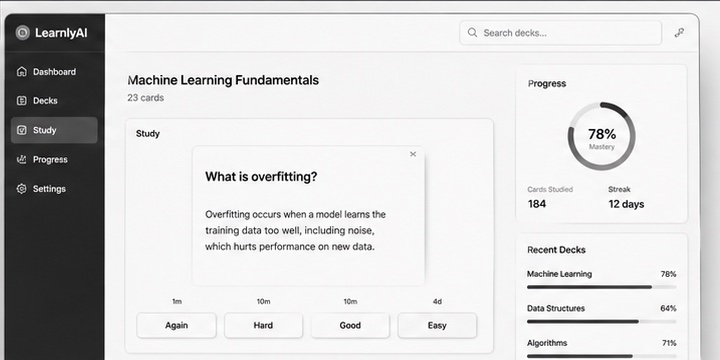
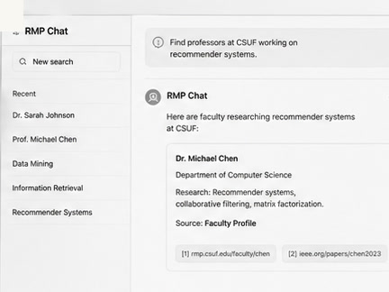
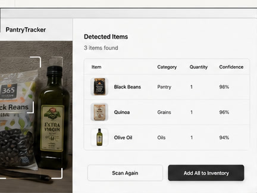

Retrieval
Search, source handling, validation, and evaluation loops for production use.
Software / AI Engineer at Robert Half + Protiviti
I build internal tools and AI-backed workflows with sources, validation, logs, and interfaces people can inspect.

Search, source handling, validation, and evaluation loops for production use.
Workflow bridges between internal tools, business systems, and operators.
Full-stack screens that make technical work easier to inspect.
Background
I completed my B.S. in Computer Science at Cal State Fullerton and now work as a Software / AI Engineer at Robert Half / Protiviti. I care about traceability: what source was used, what changed, and what a reviewer can verify.
Recent work spans retrieval systems, evaluation harnesses, Salesforce Agentforce integrations, AI security research, and nonprofit mapping tools. The common thread is software that is small enough to understand and sturdy enough to use.
Working set
RAG, web search, source handling, evaluation loops, and output paths that can be audited after the run.
Workflow bridges between internal tools, Salesforce Agentforce, and the systems people already use.
Interfaces, auth-aware flows, data views, and product surfaces that make technical systems inspectable.
Vector stores, PostgreSQL, Firebase, Docker, deployment workflows, and pragmatic infrastructure.
input -> retrieval
retrieval -> citations
citations -> validation
validation -> reviewable resultWork history
Robert Half / Protiviti
Engineering search workflows, validation logic, and multi-agent connectors for internal GPT and Salesforce Agentforce environments.
Robert Half / Protiviti
Built a production-ready multi-agent workflow across eight sources, using Azure AI Foundry and Semantic Kernel to reduce manual market research work.
Walt Disney
Led cross-functional AI security research and implementation work under NDA, with emphasis on controlled AI system behavior.
Develop For Good
Built React mapping tools for nonprofit volunteer distribution across underserved Colombian communities.
Selected work

A study-card generator for focused review. The core loop is simple: bring source material in, turn it into cards, review, and keep moving.
2024 / Study workflow
A retrieval assistant for professor research, pairing user questions with vector-backed context and source-aware responses.
2024 / Faculty retrieval
Household inventory tracking with clear item states, fast updates, and a practical daily-use interface.
2024 / Inventory surfaceEmail is best
Send the workflow, repo, product surface, or internal tool. I am easiest to reach by email.